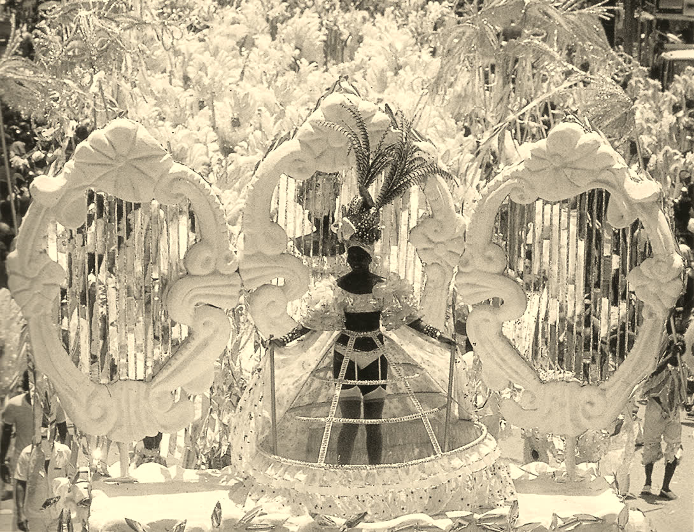
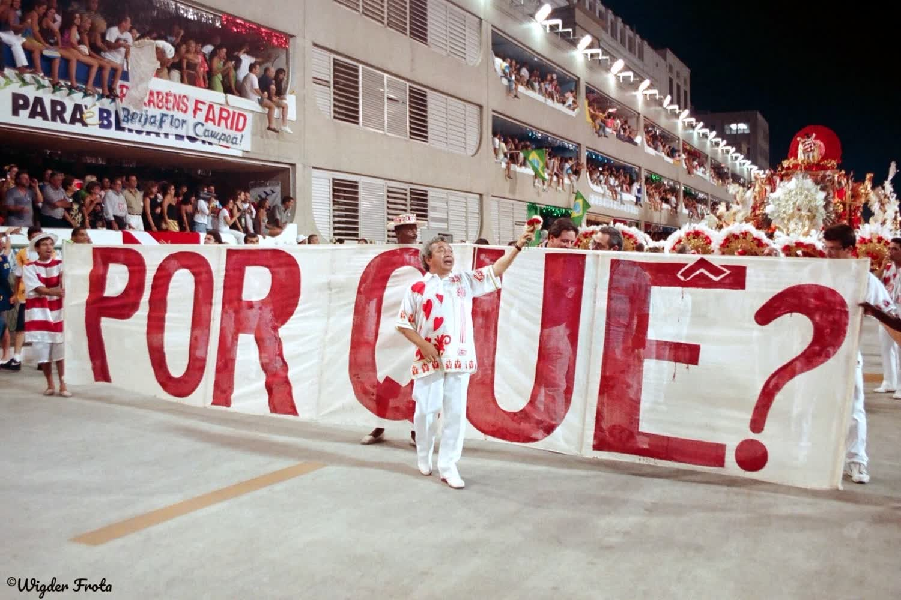
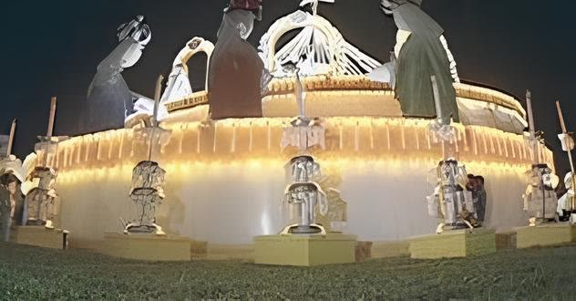
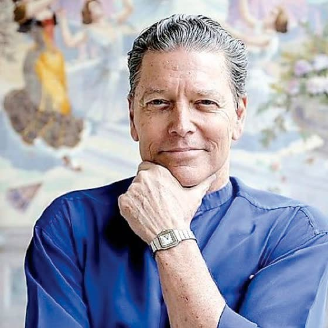
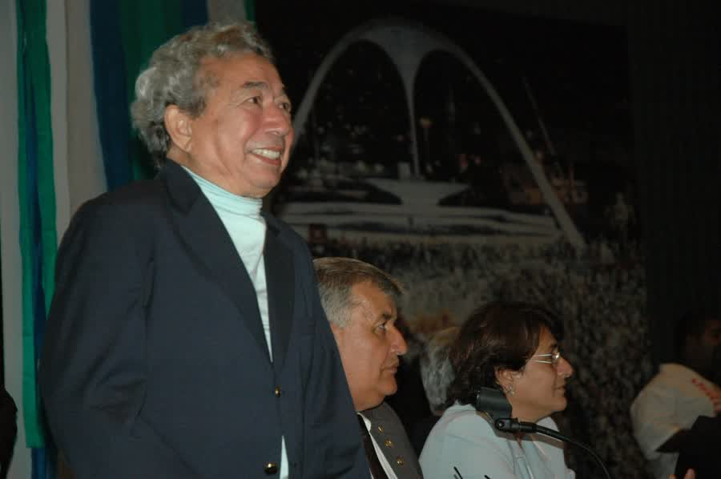
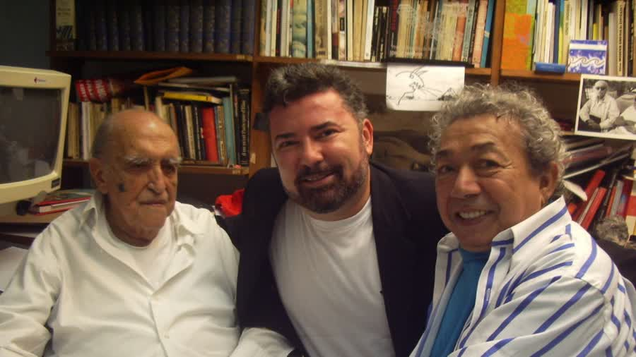
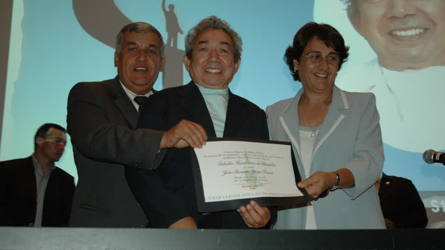

Joãosinho Trinta · 1933 a 2011
O povo gosta de luxo.
Role para rasgar o plástico
Quem gosta de miséria é intelectual.
Isopor, sucata e purpurina.
Na avenida, virava ouro.
Onde houver cultura, haverá desenvolvimento humano.
Desde 2008, a gente leva o ofício dele para quem faz cultura no Brasil.
Joãosinho Trinta · 1933 a 2011
O povo gosta de luxo.
Quem gosta de miséria é intelectual.
Ato I · O artista
Do palco do Municipal para a avenida.
Nasceu em São Luís, no Maranhão, em 1933. Chegou ao Rio aos 17 anos, numa terça-feira de Carnaval. Foi bailarino do Theatro Municipal por trinta anos, dançando Aida e O Guarani. Em 1961 entrou no Salgueiro. Levou para a Sapucaí o que aprendeu na ópera: cenário, luz e grandeza. Chamava o desfile de ópera de rua.

- 1933São Luís, Maranhão
- 1951Chega ao Rio numa terça de Carnaval
- 1961Entra no Salgueiro
- 1974Primeiro título como carnavalesco
- 1976Começa a era Beija-Flor
- 2004Deixa as escolas e vira consultor de projetos culturais
- 2008Cria o Instituto Joãosinho Trinta
- 2011Morre em São Luís, aos 78 anos
Nasceu João Clemente Jorge Trinta. O “s” de Joãosinho veio de uma numeróloga, que sugeriu trocar o “z” do diminutivo.



Ato II · Os títulos
O Pelé do Carnaval.
Era assim que o chamavam. Foram oito títulos como carnavalesco.
- 1974SalgueiroO Rei de França na Ilha da Assombração
- 1975SalgueiroO Segredo das Minas do Rei Salomão
- 1976Beija-FlorSonhar com Rei dá Leão
- 1977Beija-FlorVovó e o Rei da Saturnália na Corte Egipciana
- 1978Beija-FlorA Criação do Mundo na Tradição Nagô
- 1980Beija-FlorO Sol da Meia-Noite, uma Viagem ao País das Maravilhas
- 1983Beija-FlorA Grande Constelação das Estrelas Negras
- 1997ViradouroTrevas! Luz! A Explosão do Universo
Ato III · 1989
Mesmo proibido, olhai por nós.
Rio, 7 de fevereiro de 1989. A Beija-Flor entra na Sapucaí com Ratos e Urubus, Larguem Minha Fantasia. Mendigos, sucata e lixo na avenida. No alto, um Cristo mendigo que a Justiça tinha proibido de desfilar. Ele passou assim mesmo, coberto de plástico preto, com uma faixa: mesmo proibido, olhai por nós.
Joãosinho desfilou vestido de gari, com uma mangueira na mão. A escola ficou em segundo lugar. O desfile ficou na história.


Tudo passava pela Censura. Desenho de fantasia e samba-enredo da Beija-Flor, carimbados em 1982. Arquivo Nacional, domínio público.
Ato IV · O segredo
Ele fazia luxo com o que a cidade jogava fora.
Isopor, garrafa, sucata e brilho. Nas mãos dele, tudo virava ouro. É esse ofício que o Instituto leva adiante.
Mantenha o botão pressionado, com o mouse, o dedo ou a barra de espaço, até a palavra virar LUXO.
Disseminar.
Os princípios de planejamento e produção cultural, para diferentes públicos, com os recursos que cada lugar tem.
Replicar.
Técnicas, conhecimento e lições aprendidas, para projetos públicos e privados de todos os tamanhos.
Compartilhar.
Práticas e casos de sucesso com quem trabalha com cultura.
Ato V · A avenida
O luxo que ele defendeu continua desfilando.



Ato VI · A origem
Uma amizade em Brasília virou instituição.
O Instituto nasceu de uma história construída entre a gestão pública, a amizade e o compromisso com a cultura brasileira. No centro dela está José Ricardo Marques, advogado, jornalista, cientista político, gestor público e agente cultural.
O marco
Complexo Cultural da República
Secretário de Cultura do Distrito Federal, José Ricardo Marques participou da inauguração do complexo, na Esplanada dos Ministérios. Concebido como um dos grandes símbolos culturais da capital, ele ampliou o acesso da população à arte, ao conhecimento e à memória nacional.
- Museu NacionalHonestino Guimarães
- Biblioteca NacionalLeonel de Moura Brizola
- EndereçoEsplanada dos Ministérios, Brasília
O encontro
Joãosinho veio a Brasília para se tratar. Ficou cinco anos.
Em tratamento de saúde no Hospital Sarah Kubitschek, o carnavalesco conheceu José Ricardo Marques. Da conversa nasceu uma amizade de confiança e solidariedade, e da amizade nasceu uma casa: Joãosinho foi acolhido na residência dele por cerca de cinco anos.
Foi nessa convivência que se conheceu, além do artista reconhecido no país inteiro, o homem, o pensador e o criador que entendia a cultura como expressão da identidade brasileira. Da amizade nasceu uma responsabilidade com o legado.
de convivência em Brasília, na casa de José Ricardo Marques.
O legado que o Instituto carrega
Criação
Imaginação aplicada à cenografia, ao espetáculo e à cultura popular.
Identidade
Valorização de símbolos, histórias e expressões que formam o Brasil.
Indústria criativa
Integração entre arte, trabalho, conhecimento e geração de valor.
Acesso
Cultura como experiência pública, coletiva e transformadora.
Quem somos
O apoio à cultura é a força que o nosso país precisa.
O Instituto Joãosinho Trinta nasceu em 21 de outubro de 2008, criado pelo próprio Joãosinho ao lado de José Ricardo Marques, que o acolheu em Brasília nos seus últimos anos. É uma Organização da Sociedade Civil de Interesse Público e, há mais de quinze anos, leva boas práticas ao setor cultural e ajuda a estruturar a economia criativa. Sob a presidência de José Ricardo Marques, reúne num mesmo trabalho memória, patrimônio, formação, produção cultural e economia criativa.

Missão
Promover boas práticas no setor cultural e ajudar a estruturar a economia criativa, transformando a sociedade pela qualidade do setor e pela qualificação de quem faz cultura.
Visão
Desenvolver a economia e a indústria criativa de forma sustentável e inclusiva, preparando o setor das artes em todas as suas vertentes, com inovação e criatividade.
Valores
Ser referência no mercado criativo, com sustentabilidade, boa governança, ética e resultados que transformam, sobretudo no desenvolvimento humano.
O Instituto cultiva
- Transparência
Recursos bem geridos e resultados públicos, para que as lições sirvam a toda a sociedade.
- Inovação e inclusão
Caminhos simples para os desafios da cultura, explicados de um jeito acessível a quem produz.
- Ética e justiça
Benefícios e responsabilidades da cultura divididos de forma justa com toda a sociedade.
- Sustentabilidade
Boas práticas que mantêm a cultura viável, na economia e na vida das pessoas.
- Dinamismo
Inquietação diante dos desafios, com novas tecnologias e pesquisa aplicada.
Economia criativa
A casa falava em economia criativa antes de virar pauta.
Quando o assunto mal aparecia nas políticas públicas, José Ricardo Marques abriu o debate sobre indústria e economia criativa no Brasil, inclusive em encontros no Teatro Municipal com a participação do então ministro da Cultura Gilberto Gil.
Cultura e trabalho
A cadeia cultural reúne criação, produção, circulação e renda.
Política pública
O poder público pode estruturar ambientes para que o talento vire oportunidade.
Desenvolvimento
Investir em cultura fortalece territórios, identidade e atividade econômica.
A cadeia produtiva da cultura
- Criação
- Produção
- Comunicação
- Tecnologia
- Circulação
- Empregos
- Território
Cultura não é só evento nem só preservação de manifestação tradicional. É uma cadeia produtiva inteira, e ela gera desenvolvimento onde chega.
Arquivo Nacional
A memória brasileira chegou ao Ártico.
Diretor-geral do Arquivo Nacional, José Ricardo Marques inaugurou a presença do Brasil no Arquivo Ártico Global, em Svalbard, no extremo norte da Noruega.
O projeto foi concebido para preservar, em condições climáticas e tecnológicas especiais, documentos digitais de grande relevância histórica para a humanidade. O Arquivo Nacional entrou no grupo inaugural de instituições depositantes, ao lado de nomes internacionais comprometidos com a proteção da memória do mundo.
Segundo a CNN, o acontecimento figurou entre os dez fatos mais importantes do mundo naquele período.
- ≈1.000km
do Polo Norte, em Svalbard, no extremo norte da Noruega.
- 1ºdepósito do Brasil
O Arquivo Nacional no grupo inaugural de instituições do Arquivo Ártico Global.
- 10fatos do mundo
A lista da CNN no período incluiu o depósito brasileiro.
Memória · Tecnologia · Futuro
A equipe
Quem faz o Instituto.
Especialistas em economia criativa, direito, relações de governo, comunicação e artes. A cada projeto, a equipe chama os melhores técnicos para a tarefa.
Presidente e cofundador
José Ricardo Marques
Advogado, jornalista e cientista político. Conviveu com Joãosinho por cerca de cinco anos. Foi secretário de Cultura do Distrito Federal e diretor-geral do Arquivo Nacional, quando levou a memória brasileira ao Arquivo Ártico Global. Cidadão Honorário de Brasília.

Vice-presidente e diretor artístico
Fernando Bicudo
Ator, cantor, bailarino, economista e diplomata, e um dos maiores produtores de ópera do país. Dirigiu o Theatro Municipal do Rio nos anos 1980.

Comunicação e marketing estratégico
Renato Riella
Jornalista. Foi editor-chefe do Correio Braziliense e secretário de Comunicação do Governo do Distrito Federal. Idealizou a Capital Fashion Week.

Comunicação e artes
Leonardo Rivera
Jornalista e editor do caderno de Cidades do jornal O Dia. Trabalhou no marketing da Polygram lançando talentos da música brasileira.
Comunicação e produção
Eduardo Monteiro
Jornalista, publicitário e produtor cultural, há mais de 30 anos consultor de comunicação e marketing. Produz, roteiriza e dirige documentários.

Pesquisa e formação de público
Adriana Garuzi
Socióloga, comunicadora e pesquisadora em desigualdade social, mestre em sociologia e antropologia. Foi produtora e editora do Globo Esporte.
Acervo
A casa guarda a memória.
Joãosinho em premiações, ateliês e avenidas, ao lado de quem criou o Instituto com ele.






Fotos do acervo do Instituto Joãosinho Trinta.
Atuação
O que o Instituto entrega.
Seis frentes de trabalho, do desenho do projeto à prestação de contas, para governos, empresas, instituições e comunidades.
Projetos culturais
Concepção, planejamento e implantação de iniciativas públicas e privadas.
Editais e seleções
Estruturação de critérios, análise técnica e organização dos processos.
Memória e patrimônio
Registro, preservação, difusão e educação patrimonial.
Economia criativa
Programas para fortalecer agentes culturais, redes locais e cadeias produtivas.
Formação
Capacitação de gestores, produtores, artistas e equipes técnicas.
Articulação
Integração entre governos, instituições, empresas e comunidades culturais.
Projetos
Cultura que muda a cidade.
São Gonçalo · Rio de Janeiro · Lei Paulo Gustavo
O Instituto foi contratado pela Secretaria de Cultura e Turismo do município para atuar na seleção de 400 projetos culturais vinculados aos programas e mecanismos da Lei Paulo Gustavo.
- 01 Planejamento
Critérios, fluxos e governança do processo.
- 02 Análise técnica
Avaliação responsável de cada proposta.
- 03 Seleção
Resultados consolidados com segurança e transparência.
- 04 Impacto
Fomento à diversidade cultural e aos agentes do território.
Presépio de Brasília.
Na capital, um presépio tão grande que foi preciso um guindaste para coroar os reis magos. O Fantástico, da TV Globo, acompanhou.
Carnaval de Cavalcante.
Em Goiás, capacitação e qualificação que levaram o carnaval da cidade à cena e mudaram a vocação da região.
São Gonçalo.
Consultoria e seleção de projetos para a Secretaria de Cultura e Turismo, dentro da Lei Paulo Gustavo, com planejamento estratégico e um programa de transparência e integridade.
Coluna IJT
Ideias da casa.
- Cinema · jan 2026O cinema brasileiro vive um tempo luminosoO reconhecimento do cinema nacional mostra que cultura é investimento: gera emprego, renda e desenvolvimento.
- Memória · set 2022Joãosinho Trinta, eterno!Por que o Pelé do Carnaval segue como a maior referência de ousadia da Sapucaí, de Ratos e Urubus ao Cristo coberto.
- Carnaval 2026Acadêmicos de Niterói, Sapucaí 2026O Carnaval nunca foi neutro: uma leitura do desfile a partir da ópera de rua de Joãosinho.
Perguntas
Antes de você chamar a gente.
O Instituto só trabalha com Carnaval?
Não. O Carnaval é a escola de onde a gente vem, mas o trabalho vale para todas as linguagens: teatro, música, dança, cinema, festas populares e patrimônio.
A minha cidade pode contratar o Instituto?
Pode. Já prestamos consultoria à Secretaria de Cultura de São Gonçalo e fizemos projetos em Brasília e em Cavalcante, Goiás. Conte o que a sua cidade quer fazer e a gente desenha o caminho junto.
Como a minha empresa pode apoiar?
Apoiando um projeto, levando uma ação cultural para a sua comunidade ou propondo uma parceria. A gente cuida do planejamento e mostra o resultado de cada etapa.
Vocês organizam editais e processos de seleção?
Sim. Em São Gonçalo, no Rio de Janeiro, o Instituto foi contratado pela Secretaria de Cultura e Turismo para a seleção de 400 projetos da Lei Paulo Gustavo, do desenho dos critérios à consolidação dos resultados.
O Instituto trabalha com memória e patrimônio?
Trabalha. Registro, preservação, difusão e educação patrimonial são uma das seis frentes da casa. É a mesma convicção que levou o Arquivo Nacional ao Arquivo Ártico Global, em Svalbard, na gestão de José Ricardo Marques.
Como vocês prestam contas?
Transparência é o primeiro valor da casa. Cada recurso é gerido com cuidado, e os resultados ficam públicos para que as lições sirvam a todos.
Posicionamento
Cultura é memória viva. Quando preserva a sua história, forma pessoas e gera oportunidades, ela se converte em desenvolvimento.
- História
Origem ligada à convivência e ao compromisso pessoal com Joãosinho Trinta.
- Autoridade
Gestão pública em cultura e na preservação da memória nacional.
- Execução
Capacidade técnica demonstrada em projetos culturais de escala.
- Visão
Cultura como identidade, cidadania e desenvolvimento econômico.
O convite
Junte-se a nós.
Tem um projeto, uma cidade ou uma empresa que quer fazer cultura com luxo de verdade? Conte para a gente.
Fale com a nossa equipe
- WhatsApp(21) 98960-0559
- Telefone(21) 3228-5007
- E-mailcontato@institutojoaosinhotrinta.com.br
- EndereçoRua Acre 83, sala 1106, Centro, Rio de Janeiro, RJ